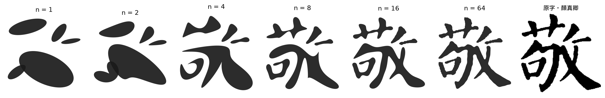
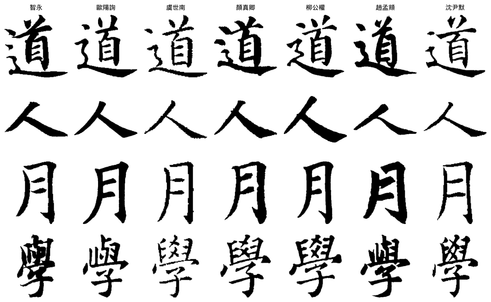
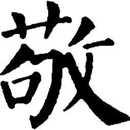
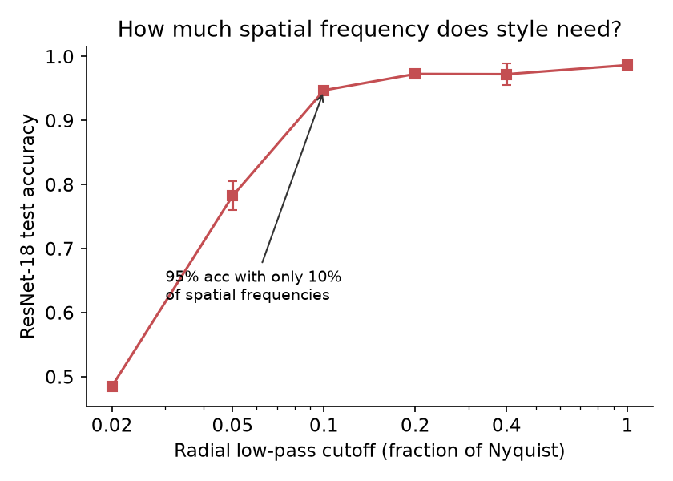
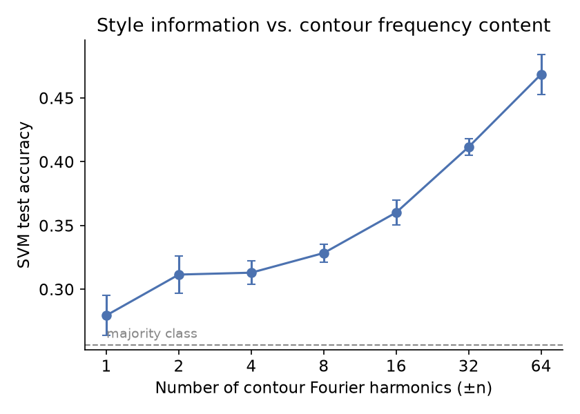
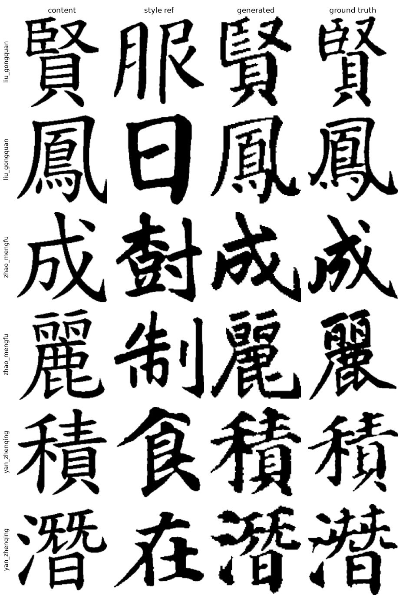

中文書法教學長期存在一項共識：書法家的個人風格主要體現於字的間架結構，筆鋒細節次之。 本研究以量化方法檢驗此一命題。我們整理了一組涵蓋七位書法家、十本字帖、 1,057 個獨特字、共 7,449 張單字影像的資料集，其結構特點是包含 3,600 組以上 「同一個字、不同書法家」的配對樣本——此一設計可控制字形內容變因， 是公開書法資料集所不具備的。在測試字與訓練字完全不重疊的評估協定下，我們得到三項結果： 其一，對字圖施加徑向低通濾波後重新訓練，僅保留最低 10% 的空間頻率即可達到 94.7% 的辨識準確率， 量化支持了「結構為本」的傳統論述；其二，深度風格表徵在未見過的字上的同字配對驗證達到 ROC-AUC 0.998，限制為跨字帖配對時仍有 0.989；其三，在跨資料集情境下準確率降至 32.0%， 我們據此指出筆畫寬度等再製特徵的影響。最後，我們將同一頻域框架用於診斷擴散模型的書法風格生成， 發現生成結果傾向保留標準字骨架而僅轉移筆觸紋理——我們稱之為結構鴻溝—— 此一失效模式與第一項發現互相印證，並構成一個明確的開放問題。
本研究的問題意識來自筆者十年書法臨習的經驗。臨帖時反覆遇到兩個缺乏客觀答案的問題： 其一，教師評語常指「缺乏顏體的厚重」，然而「厚重」究竟對應哪些可量測的字形性質？ 其二，欲臨習的字，該書法家的傳世字帖中未必寫過，缺字時難以取得參照。
這兩個問題分別指向風格的分析與生成。本研究的策略是先以可解釋的頻域方法 釐清風格訊號的所在，再將此一理解用於生成任務——並在生成失敗時，反過來以同一框架解釋失敗的成因。
影像蒐集自網路公開之碑帖翻攝資料，經自行清理、逐字標注與索引建立。 所有影像統一前處理為 512×512 二值化字形（白底黑字），去除紙張紋理、拓本底色與墨色差異， 僅保留字形幾何。
公開書法資料集通常以「一張影像對應一個標籤」的形式組織。 本資料集額外建立了字元層級索引，將每個字連結到所有寫過該字的書法家， 因而支援 text-dependent 的比較設計：在比較風格時，字形內容變因得以被控制。
| 書法家 | 時代 | 字帖 | 影像 | 獨特字 |
|---|---|---|---|---|
| 智永 | 隋 | 1 | 720 | 720 |
| 歐陽詢 | 唐 | 1 | 936 | 485 |
| 虞世南 | 唐 | 1 | 316 | 228 |
| 顏真卿 | 唐 | 1 | 1,725 | 631 |
| 柳公權 | 唐 | 1 | 1,399 | 492 |
| 趙孟頫 | 元 | 1 | 442 | 282 |
| 沈尹默 | 近代 | 4 | 1,911 | 553 |
| 合計 | 10 | 7,449 | 1,057 |

所有實驗採 character-disjoint 切分：將 1,057 個獨特字以 80/20 分割， 測試字的所有影像皆排除於訓練之外。模型因此無法藉由記憶特定字與書法家的共現關係取得優勢， 必須從風格本身泛化。除另行說明外，結果為五組隨機字元切分的平均值。
圖 3：方法流程。可解釋的頻域特徵與深度表徵在同一評估協定下並行比較， 分析結果再回饋至生成與應用兩端。
我們比較三組手工特徵與一組深度特徵。手工特徵包含：正規化輪廓傅立葉描述子 （等弧長重取樣後取振幅譜，具平移、縮放、旋轉與起點不變性）、 平台早期使用的七維頻譜統計量，以及 Hu 不變矩。
| 特徵 | 分類器 | 準確率 | Macro-F1 |
|---|---|---|---|
| 頻譜統計量（七維） | SVM | 31.3% | 21.6 |
| Hu 不變矩 | 邏輯迴歸 | 37.7% | 25.6 |
| 輪廓傅立葉描述子 | SVM | 39.9% | 37.7 |
| 三組手工特徵串接 | SVM | 49.4% | 48.4 |
| ResNet-18 | — | 98.7% | 98.5 |
| 多數類基準 / 隨機 | — | 25.7% / 14.3% | — |
三組手工特徵具互補性——串接後較最佳單一組別提升 9.5 個百分點—— 但整體僅涵蓋約一半的可分辨訊號。此一落差本身即為後續分析的對象。
我們對字圖施加徑向低通濾波，僅保留半徑內的頻率成分，並以濾波後的影像重新訓練分類器。 若風格資訊集中於低頻，準確率應在低截止頻率處即飽和。

互動示範。拖動滑桿改變保留的空間頻率半徑。準確率數值取自表 3 的對應實驗設定。
| 截止半徑 | 0.02 | 0.05 | 0.10 | 0.20 | 0.40 | 1.00 |
|---|---|---|---|---|---|---|
| 準確率 | 48.5% | 78.2% | 94.7% | 97.3% | 97.2% | 98.7% |


利用資料集的配對結構，我們定義一項驗證任務：給定兩張同一個字的影像， 判斷其是否出自同一書法家。所有配對均取自測試字，因此字形內容既被控制、亦未曾出現於訓練。
| 表徵 | 訓練 | ROC-AUC |
|---|---|---|
| 手工特徵（餘弦相似度） | 無 | 0.635 ± 0.061 |
| DINOv2 ViT-S/14 | 無（通用自監督） | 0.793 ± 0.021 |
| ResNet-18 style embedding | 本資料集訓練字 | 0.998 ± 0.000 |
通用視覺基礎模型在零訓練條件下即捕捉到相當程度的風格訊號， 但領域訓練仍帶來決定性差距——書法風格驗證並非通用視覺特徵可直接解決的任務。
由於每位書法家對應特定字帖，模型可能利用再製特徵（特定版本的筆畫粗細、二值化邊緣性質） 而非風格本身。我們設計三項檢查加以量化。
| 檢查 | 設計 | 結果 |
|---|---|---|
| 字帖簽名 | 辨識沈尹默自身的四本字帖 | 88.3%（基準 39%） |
| 驗證 AUC 拆解 | 正例限定為跨字帖配對 | 0.989（同字帖 0.999） |
| 留一字帖 | 完全保留一本字帖不訓練 | 71.6% – 99.3% |
| 跨資料集 | 獨立蒐集的 40,152 張外部影像 | 32.0% |
| 跨資料集（筆畫寬度正規化） | 骨架化後以固定寬度重繪 | 37.1% |
跨字帖驗證僅較同字帖下降 0.010，且保留的字帖多能被正確辨識， 顯示風格表徵確實跨越了來源。然而跨資料集情境下準確率大幅下降： 未經正規化時，外部的細筆畫影像集中被判為本資料集中筆畫較細的類別， 柳公權與虞世南甚至完全未被預測。經骨架化與固定寬度重繪後， 顏真卿的辨識率自 16% 回升至 75%，說明筆畫寬度為主要的跨源干擾因素之一。 同源辨識容易、跨源泛化困難——後者才是此任務的實際難點。
我們進一步檢驗頻域理解能否改進生成。任務設定為：給定標準字形（內容）與該書法家的一張參考字（風格）， 生成該書法家風格的目標字。評估利用本資料集的獨有條件—— 保留 450 個該書法家確實寫過但未參與訓練的字作為 ground truth， 以獨立訓練並凍結的風格分類器判定生成結果是否被辨識為目標書法家。
| 方法 | Style match | SSIM |
|---|---|---|
| 標準字（不做任何轉換，下限） | 12.4% | — |
| FontDiffuser [AAAI 2024]，官方釋出權重 | 20.0% | 0.531 |
| 本研究流程（微調＋guidance 調校＋驗證導引重排） | 34.3% | 0.557 |
| 書法家真跡（上限） | 91.9% | — |
相對於官方釋出的模型，本流程將風格辨識率自 20.0% 提升至 34.3%（相對提升 71%）。 需說明的是：此一提升來自資料調適與推論策略，而非新的網路架構； 下表的消融顯示，我們嘗試的結構性損失並未帶來額外增益，其原因見後段分析。
| 設定 | Style match | SSIM |
|---|---|---|
| FontDiffuser zero-shot | 20.0% | 0.531 |
| ＋ 本資料集微調（15k 步） | 32.4% | 0.556 |
| ＋ 頻域結構損失（權重 0.1） | 32.9% | 0.554 |
| ＋ 類別平衡重採樣 | 31.0% | 0.556 |
| ＋ 頻域結構損失（權重 2.0，修復微調） | 33.3% | 0.563 |
| ＋ 軟骨架結構損失（權重 5.0，修復微調） | 33.3% | 0.552 |
| ＋ guidance scale 調校（7.5 → 12） | 33.8% | 0.556 |
| ＋ 驗證導引重排（K=5，獨立選擇器） | 34.3% | 0.557 |
| 重排理論上限（完美選擇器） | 37.1% | — |
依據「身份訊號集中於低頻結構」的發現，我們設計了兩種直接約束結構的損失： 其一於頻域比較預測與真跡的低頻成分；其二以可微分的軟骨架 （min／max-pooling 實作形態學運算，取法 clDice 於拓撲保持之作法）比較兩者骨架。 兩者皆自同一微調檢查點續訓 5,000 步，除損失項外設定完全相同。
| 設定 | SSIM 對真跡 ↑ | SSIM 對標準字 ↓ | 內容洩漏率 ↓ | Style match |
|---|---|---|---|---|
| 微調基準 | 0.5557 | 0.5404 | 39.0% | 33.8% |
| ＋ 頻域結構損失 | 0.5625 p = 0.021 |
0.5264 p < 0.001 |
28.6% p = 0.030 | 33.3% |
| ＋ 軟骨架結構損失 | 0.5521 n.s. |
0.5279 p < 0.001 |
31.0% n.s. | 33.3% |
六項介入的風格辨識率均在 34% 附近趨於飽和。定量分析顯示其成因： 生成結果保留了標準字的骨架，僅轉移筆觸外觀。 以柳公權為例，生成字與標準字的 SSIM（0.552）高於其與該書法家真跡的 SSIM（0.540）； 全體生成結果中有 39% 更接近標準字而非目標真跡。 相對地，筆畫寬度的重現相當精確（如趙孟頫 13.7 px 對真跡 13.5 px）。 維持高辨識率的類別（虞世南、沈尹默）恰是其結構最接近現代標準字者。

研究結果已落實於一個部署上線的學習平台。臨帖診斷接受使用者上傳的習字照片， 輸出與名家版本的逐像素差異疊合圖與結構均衡量測；其回饋順序（結構優先、筆觸細節次之） 即依據 4.2 節的發現設計。
集字功能則承接 4.5 節的生成研究，並沿用書法史上的集字傳統 （如唐代懷仁《集王聖教序》自王羲之真跡中逐字輯錄）： 輸入一句話後，字庫中有真跡者直接取用真跡，其餘由模型補足， 每字標明來源，並依 4.5 節的評估結果標示各書法家的生成可靠度。 此一設計使系統的能力邊界對使用者透明。